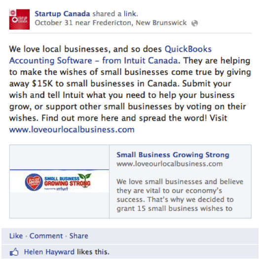

Startup Canada has been working in partnership with Intuit to support entrepreneurs in Canada through a variety of programming including Facebook posts, #startupchats hosted on Twitter, events and articles featured in PIVOT magazine.
As a Gold sponsor, Intuit can expect the following commitments from Startup Canada:
Hosted by Startup Canada, the Montreal Entrepreneurial MashUp took place on 24 October 2013 and was attended by 112 entrepreneurs. This MashUp connected traditional industry leaders with new startup tech companies.
On 18 October 2013, Startup Canada hosted a #StartupChats session with a panel in partnership with Intuit on the topic of building a network for success. This session had 18 participants, 23 listeners, 32 retweets and 54 favourites, and over 36 million Twitter impressions were generated. A summary of the chat can be seen on Storify. The official description of the #StartupChats session is provided below:
Entering the business world for the first time can be intimidating! Getting involved in local and online events and communities can build your network quickly while marketing your business at the same time. In this chat we'll look at the benefits and best practises of building an effective network.
Startup Canada broadcasts numerous updates to its extensive Twitter and Facebook follower base and reaches a significant number of people across social media. A number of regular shoutouts have been made over the past month, and an example shoutout is provided below:
Overall, Startup Canada was able to generate over 2000 Facebook impressions throughout the month via posts promoting Intuit.
To date, three articles have been published as part of an exclusive series in PIVOT Magazine focusing on youth entrepreneurship in Canada. The series is part of a joint campaign, called Fuelling a Startup Generation, by Startup Canada and Intuit Canada to advance the conversation about and celebration of young entrepreneurs across the country.
Startup Canada achieved a growing impact over the past four weeks via Facebook, LinkedIn and Twitter. The metrics below show an aggregate of "likes," comments and views across the three social networks.
Startup Canada continues to work on promoting Intuit to entrepreneurs through its social media channels. Through the partnership of Intuit and Startup Canada, a growing number of entrepreneurs have been reached through the social media campaigns hosted on Twitter, LinkedIn and Facebook.

Edward Kim
Data Coordination & Reporting Lead

John Henwood
Strategic Relations Assistant
Entrepreneurship Empowers Everyone TM/MD
© 2013 Startup Canada. All Rights Reserved.